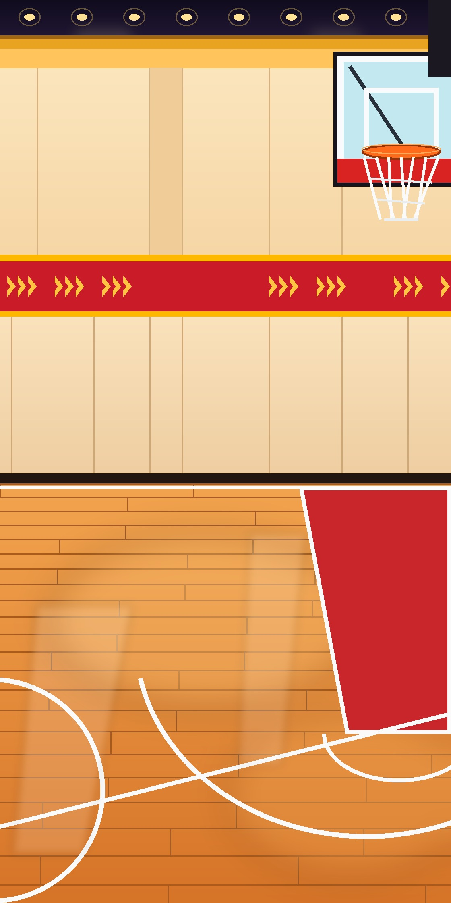

Math Court — Pick Your Game!
Pick a game and play one prompt at a time with Leo. You can stop anytime and come back later — Leo will be waiting!
Let's play!
⭐ Your Team
0
First to 20 wins!🔥 Streak: 0
🦁 Leo’s Lions
0

Your player is ready — answer to shoot! 🏀
Your turn — you can do it!
✏️ Writing Practice
🎒 Kindergarten
Let's write some letters, superstar!
👆 Touch the screen and trace the letter!
⭐ Writing stars: 0
📋 Progress Report
Progress in Karter's Court
Everything below is saved on this device as your child plays.
⭐ A star is earned when a question is answered correctly on the first try. “Finished” means a game’s full set of 240 questions for this grade has been completed. Writing, Reading/Phonics and Word Meanings each belong to the grades shown — they appear here only for the grades they are part of.
📅 Choose the period for your report